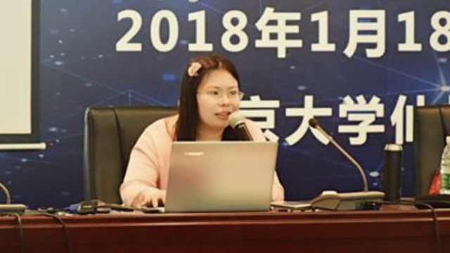

学生反馈出的她的做派和思维体系确实吓人，但这种人怎么拿到这么多头衔的？长江学者不是据说是仅次于院士的学术荣誉吗？竟然是博导，不知要误多少博士？//@杨伯溆:学界到底都是些什么妖魔鬼怪在舞台上扭来扭去，不可想像？
@蒋晓峰Terry:
#南大彻查明星教授论文# 社会学院教授 #梁莹# 卷入抄袭风波，39岁身披青年长江学者等多项顶级荣誉，却被指抄袭和一稿多投，主动要求期刊撤稿，百篇论文凭空消失。接媒体电话时，梁莹说：“我现在身体非常弱，非常不舒服，不要再发新闻，不要再打扰我了好吗”。  南大回应明星教授涉抄袭：开始彻查
南大回应明星教授涉抄袭：开始彻查

2万次播放
02:28